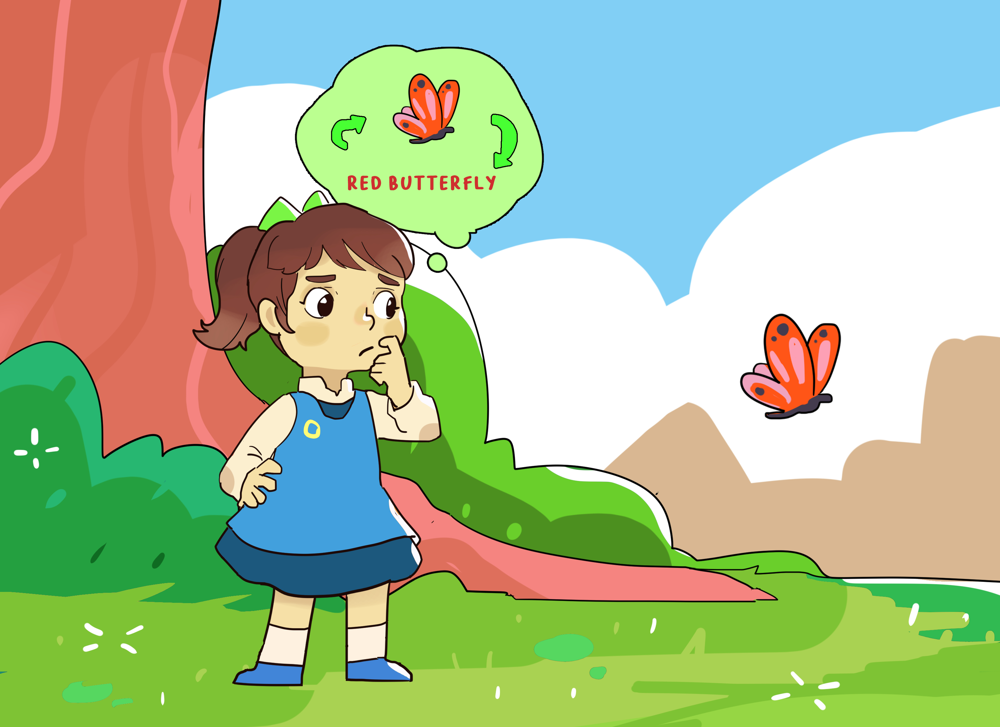

Conor Houghton
 |
Contact conor.houghton@bristol.ac.uk |
The latest news!
(2025-01-22) BRAID: Brains, AI and Data!
Today we ran our BRAID workshop today at the Watershed, with support from the Jean Golding Institute and the Elizabeth Blackwell Institute and more specifically by the Turing Liaison team at the JGI and the Bristol Neuroscience hub at the EBI.
It went really well, the idea was to celebrate AI and machine learning as an approach to neuroscience data and to celebrate the conversation between neuroscience and AI, so neuroscience as an application of AI and neuroscience and AI as subject which have a long history of useful exchange.
There were great talks and lots of excitement and conversation. The highlight was the flash talks by PhD students and PostDocs, three minute talks are really hard to give but when done well as they were here, they are fun and informative. I also really enjoyed a super entertaining talk by Edwin Dalmaijer; it turns out that pigeons, famously good at navigating, don't do it exactly the way you'd expect, they rely on recognizing landmarks as well as their sense of direction, sometimes leading to circuitous routes, however, when flying with other birds, their flocking behaviour leads them to discover new, more direct routes. Edwin used a simple agent model to show how this might work. Laurence Aitchison gave a fantastic talk, full of insight, which introduction his neuroscience-y approach to understanding how transformers work, often the black-box nature of computation in neural networks is presented as a big problem, but really it is an amazing opportunity, we don't know how these machines compute but they are easier to study than the brain and so when with clever methods we work out how they do compute we will have learned something profound about the structure of computation and information.
Thanks to my co-organizers: Cathy Brown, Isy Halton, Paul Anastasiades, Paul Chadderton and Seán Froudist-Walsh.
The programme is here: 2025_BRAID.pdf
(2024-12-23) Striking image; PLoS, likes lots of journals has started asking for a `striking image' to accompany a published paper. The iterated learning model paper:
didn't have any graph that would be suitable, so I commissioned one from the cartoonist Haidar Nahwan
